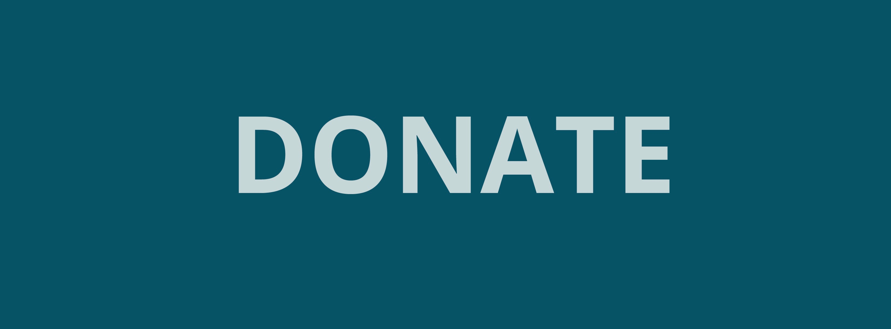
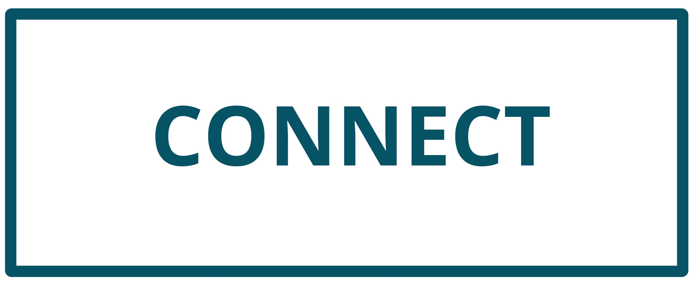
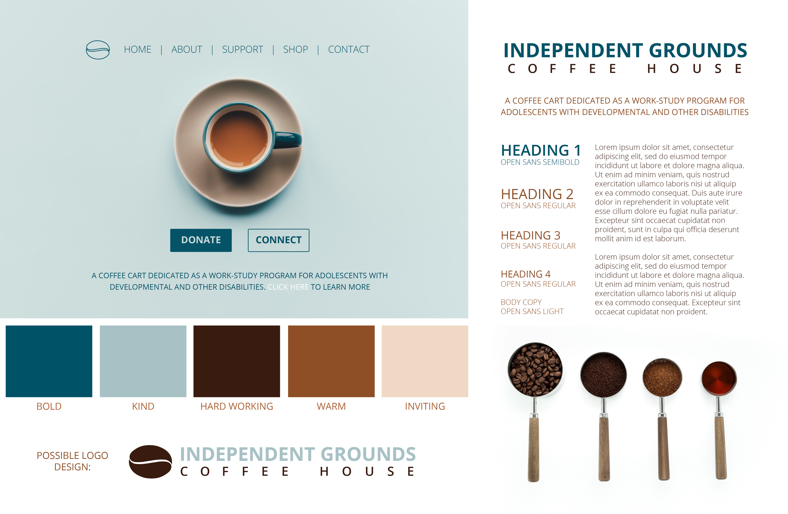

The Solution
Once we had laid a strong foundation with all of our research, our next task was to create call-to-action buttons and a style tile.
The CTA's:

The primary CTA for Independent Grounds Coffee House is “donate.” This organization’s main goal is to bring in support through donations to get the items necessary for business. This allows the workers with disabilities to not have to worry about anything besides getting the job in order to have the best learning experience in preparation for future employment.
Because this is the primary CTA, I chose to make it the one of the two to be filled in as well as put againts a light background. This allows for it to immediately catch the viewers’ attention. I chose a simple, bolded typeface that is large and legible to further this goal as well.

Another CTA for Independent Grounds Coffee House is “connect.” The second most important goal of the company is to both make people more aware of their organization, and hire more employees who have disabilities and need work experience. Having a “connect” CTA will allow users to become really engaged with with organization and really dive into learning more about what they do.
For this CTA, I chose a simple, dark outlined box set against a light background. This allows it to stand out on the page, but in a way that echoes the primary CTA without it being quite as eye-catching.
The Style Tile

With all of the research taken into consideration, I was able to create a potential style tile for the website. A style tile emulates a mood board but is a bit more specific. It includes elements such as type, color, texture, CTA buttons, and images. The options seen above are all possibilities for the website I will redesign, but are not set in stone. They are simply here to help guide the aesthetic direction of the design project.
I decided to base my color scheme off of the current Independent Grounds Coffee House logo. These colors include: light blue, dark blue, light beige, brown, and white. I changed the shade of each of the current colors a little so that they look more cohesive as a whole and compliment one another. I chose and adjusted colors in a way that I thought best fits the following qualities of Independent Grounds: Bold, kind, hard-working, warm, and inviting.
I chose to use the typeface "Open Sans" due to its light, simple, and clean feel. It seems open and welcoming, which I found to be a perfect fit for my chosen organization. Seen here are also possible imagery to be used in the website. Both images in my style tile are simple, clean, and overlap with the color scheme I have chosen.
I added in a possible logo redesign for the company, which is seen at the bottom left of the style tile, as well as a variation of it in the upper left corner of the style tyle. I changed their current logo to something that is much simpler and organic in order to add to the overall cleanlieness of the website redesign. Because it is so simple, it can be scaled to any size and still be clear and legible. This allows for much flexibility.
The upper left side of the style tile shows a possible homepage design for the organization. My goals for the homepage are to 1. Make the CTA's clear, contrasted, and legible, 2. Make the goal of the organization understood as well as provide an easy-to-find button which leads them to a page giving more detailed information, and 3. Create a navigation bar that is easily understood and leads to pages that provide all of the informtion necessary to find out all ther is to know about Independent Grounds.